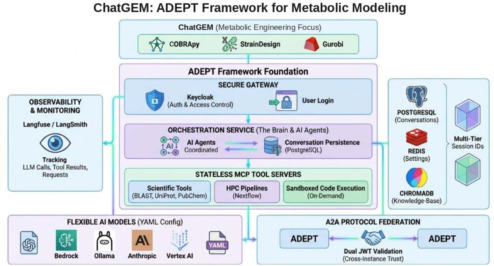
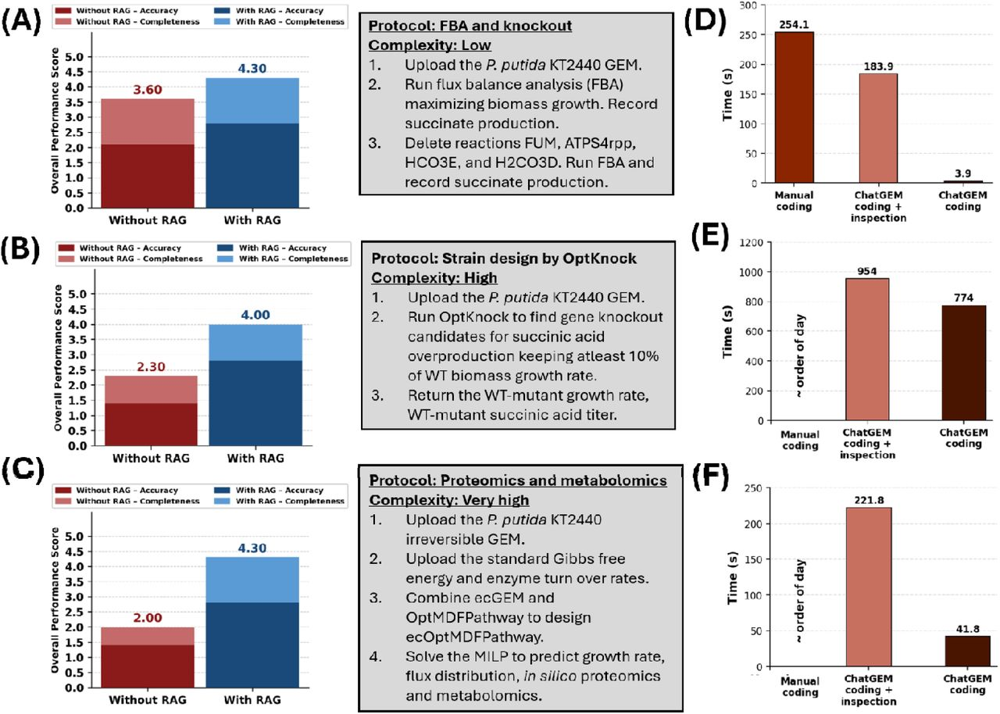

Paper deep dive · for AI engineers
Architecting ChatGEM: Agentic AI for Genome-Scale Metabolic Modeling
Bridging deterministic bio-simulation with agentic LLM orchestration
Query, edit, and simulate GEMs in natural language
LLM writes COBRApy / StrainDesign / Gurobi code; a sandbox runs it
Evidence: 3 benchmark tasks + a P. putida succinate case study
Chowdhury, George, … Rigor, Bardhan (21 authors, PNNL). “ChatGEM: An Agentic Architecture Enabling Interactive Simulation of Genome-Scale Metabolic Models.”doi:10.64898/2026.07.20.739662 · Preprint, not peer reviewed
ChatGEM lets a researcher describe a metabolic-modeling task in plain language. An LLM agent turns it into Python that calls real simulation software (COBRApy, StrainDesign, the Gurobi solver), and runs that code in an isolated container. The LLM never computes fluxes itself.
Framing for this deck: every architectural claim is checked against the paper and the public ADEPT code. Where the paper is silent but the code answers, the slide says "ADEPT repo". Where a common description of ChatGEM is wrong (for example, LangGraph approval breakpoints or COBRApy as its own MCP server), the slide corrects it. The full claim check is in the backup slides and in docs/memos/papers/chowdhury2026-chatgem.md.
Status: a preprint posted 2026-07-21 with zero citations so far. Treat the numbers as early evidence.
What is ChatGEM? · The core paradigm
ChatGEM = PNNL’s ADEPT platform + a GEM-ready sandbox + a curated script library
The problem
FBA, OptKnock, ecGEMs demand COBRApy or MATLAB coding
No prior tool runs these simulations conversationally
Three technical pillars
Orchestration: ADEPT orchestration service, LangGraph underneath*Simulation: COBRApy , StrainDesign , hand-built Gurobi MILPsExecution: containerized sandbox MCP server ; nsjail optional*

Fig. 1, Chowdhury et al. 2026 (CC BY 4.0). AI-assisted schematic, per the paper.
* From the ADEPT code (github.com/pnnl/adept-agentic @ 9c603ca), not the paper. nsjail is off by default there. The paper does not say which ADEPT configuration ChatGEM ran.
ChatGEM is not a new framework. It is an application of ADEPT, PNNL's general agentic platform (George et al. 2025, Zenodo 10.5281/zenodo.17315801). ChatGEM "inherits from ADEPT's full architecture" and adds three things: a sandbox image with COBRApy, StrainDesign and Gurobi (plus a Gurobi license-manager tool); raised run-time limits for long strain-design jobs; and a retrieval corpus of 52 hand-curated COBRApy scripts.
ADEPT has three tiers: a Keycloak gateway, an orchestration service that coordinates agents and persists conversations in PostgreSQL, and stateless MCP tool servers. Redis holds tool settings; ChromaDB holds the knowledge base. Models are configured in YAML; ChatGEM defaults to o4-mini.
The paper never names LangGraph or nsjail. The ADEPT code does use LangGraph: a custom StateGraph with Postgres checkpoints. nsjail is supported there but disabled by default, with a note that it "breaks plot generation". So we can't say ChatGEM used nsjail.
Fig. 1 was made with AI assistance, per the paper's AI-usage statement. It matches the text, but treat it as a schematic.
Novel innovations · vs a naive LLM wrapper
The real innovation: LLM code grounded in a curated library of working GEM scripts
Naive LLM wrapper ChatGEM
Who computes biology LLM guesses numbers Deterministic safeguard: solvers compute; LLM only writes codeKnowledge source Model memory; invents APIs Retrieval over 52 curated scripts in ChromaDB Execution None, or on the host Isolated sandbox container , resource limits, egress allowlist Human in the loop Types a question, trusts the answer Writes a step-by-step protocol; inspects the code Agents One chat model One Scientific Workflow Agent with tools
Deterministic safeguard: this holds. The LLM writes Python, and COBRApy, StrainDesign and Gurobi do the math inside the sandbox. But note who writes the plan: each benchmark prompt is a human-written lettered protocol (steps A to K) with reaction IDs, bounds and the algorithm already chosen. The LLM translates the plan into code; it does not design the analysis.
Grounding is the real lever. Without retrieval, models invented APIs (GPT-4.1 made up a "strain_design" package), used the wrong library (Cameo instead of StrainDesign), or wrote broken MILP constraints. With retrieval they adapted working scripts.
Human in the loop: the only HITL in the paper is a timing condition, "ChatGEM coding with manual inspection" (Fig. 2D–F). There are no approval breakpoints, and no LangGraph interrupt code in ADEPT's source. The paper mentions no 4-hour simulations; the longest reported run is 954 s.
Agents: the abstract says "specialized agents", but Methods name only ADEPT's Scientific Workflow Agent. ADEPT supports supervisor and planner multi-agent modes, but the paper doesn't say ChatGEM used them. The RAG corpus is Python scripts (plus COBRApy/StrainDesign docs in the repo), not literature.
Strategic advantages · Scientific impact
Retrieval lifted judged code quality 2.63 → 4.20 and cut coding to minutes
2.63 → 4.20 Mean code score /5, o4-mini, no RAG → RAG
~1 day → 13 min OptKnock coding, manual (est.) → agent
Rapid iteration: OptKnock strain design coded in 774 s Reproducible: Langfuse / LangSmith can trace every LLM and tool callCross-domain: biologists without Python are the goal; not yet user-tested Caveat: 1 run per task; with-RAG code ≈ copies of corpus scripts

Fig. 2, Chowdhury et al. 2026 (CC BY 4.0). A–C: judged score; D–F: coding time (s).
Benchmark: three tasks on the P. putida KT2440 model iJN1463. Task 1 is FBA plus four reaction knockouts; Task 2 is OptKnock strain design for succinate; Task 3 is ecOptMDFPathway, a custom Gurobi MILP. Each ran once with and once without retrieval. One LLM judge (Claude Sonnet 4.6) scored accuracy and completeness from 1 to 5, combined as 0.7 × accuracy + 0.3 × completeness.
o4-mini went from 2.63 to 4.20 on average; GPT-4.1 from 2.18 to 4.20. The authors say retrieval "equalizes" models, so the cheaper o4-mini is enough. Inference cost was not reported.
Time: FBA was 254 s manual vs 184 s with inspection vs 3.9 s agent-only; the "65×" headline is that last pair. With inspection it's about 1.4×. OptKnock was 774 s (954 s with inspection) vs "~order of a day" manually. That manual figure is an estimate, not a measurement. ecOptMDF was 41.8 s (221.8 s with inspection).
Audit: Langfuse and LangSmith tracing are ADEPT capabilities. The paper doesn't use traces in its results.
Main caveat: the retrieval corpus already contains near-exact solutions. With-RAG Task 3 code matches the corpus script on 183 of 184 lines, and both models produced identical with-RAG code. The gain mostly measures retrieving the answer key, not generalizing. See backup.
Deep dive · The MCP superpower
MCP is the contract between a non-deterministic agent and deterministic tools
Tool abstraction
BLAST , UniProt , PubChem , Nextflow as MCP tool serversSchemas over JSON-RPC (ADEPT repo)
LLM sees typed tools, not raw APIs
Decoupled scaling
Servers are stateless ; state lives in the orchestrator
Swap or scale a server without touching agent logic
COBRApy / StrainDesign are not separate servers : they’re installed in the sandbox image
Secure execution
Generated code goes to the sandbox MCP server
Isolated network, non-root, dropped capabilities, CPU/memory caps, egress allowlist, AST import check
nsjail opt-in, off by default; timeout 30 s default, 300 s max
Paper p. 4–5, Methods p. 11–12; sandbox details from github.com/pnnl/adept-agentic @ 9c603ca (sandbox_mcp_server).
The paper describes ADEPT's third tier as "stateless MCP tool servers" that run scientific tools (BLAST, UniProt, PubChem), HPC pipelines (Nextflow), and "sandboxed code on demand". JSON-RPC isn't in the paper, but ADEPT's README says its servers speak the MCP JSON-RPC protocol.
One correction to a common description: COBRApy and StrainDesign are not their own MCP servers. They are Python dependencies installed in ChatGEM's "custom Python code execution environment" inside the sandbox container. The agent reaches them by writing code, not by calling typed "run_fba" tools. That's flexible but less constrained. We come back to the trade-off in the takeaways.
Sandbox details come from the ADEPT code: subprocess execution in a dedicated container on an isolated network that can reach only the orchestration service, a non-root user, dropped capabilities, CPU and memory limits, an egress allowlist, and AST-based import checks. nsjail is supported but disabled by default ("breaks plot generation"). The default timeout is 30 s with a 300 s maximum, below the 774 s OptKnock run, which is why the authors raised "run-time allowances".
How the system works · The technical lifecycle
One strain-design request, end to end: the paper’s OptKnock task
Input User uploads P. putida iJN1463Retrieve Agent searches ChromaDB over the 52 curated scripts; finds 44._optknock.pyGenerate Scientific Workflow Agent (LangGraph ReAct loop) adapts it into StrainDesign OptKnock codeExecute Sandbox MCP server runs it with Gurobi ; run-time limits raised for long jobsReturn Printed values + Excel export; large outputs go to files, summaries go back to the LLMReport Agent answers in chat. Separately, Claude Sonnet 4.6 judged the code (evaluation only)
Agent-only coding time 774 s; 954 s with manual inspection (Fig. 2E). Step 3 loop and step 5 file handling from the ADEPT repo. The paper has no E. coli / PubChem / JSON-return workflow.
This is Task 2 from the benchmark, the closest real analogue to a "find knockouts for succinate" request. It uses P. putida KT2440, not E. coli.
1. The prompt is a detailed human protocol: glucose uptake −6 mmol/gDW/h, eight exchanges set to secretion only, at most two knockouts, at least 10% of wild-type growth, nine excluded reactions, and export to Excel. The user also uploads the SBML model and data files.
2. The curated corpus was uploaded and ingested into ChromaDB. It includes 44._optknock.py, which solves this task on this model.
3. In the ADEPT code, the Scientific Workflow Agent is a LangGraph StateGraph with agent, action and terminate nodes. A loop guard ends runs after 3 identical tool calls in the last 10 messages, or 3 failures of the same tool.
4. Execution is routed to the ChatGEM sandbox container. The OptKnock job is a bilevel MILP solved by Gurobi.
5. Results are printed and exported to Excel, not returned as JSON by a COBRApy server. ADEPT writes large tool outputs to files and returns summaries so the context stays small.
6. The LLM judge is part of the evaluation, not the product loop.
Detail worth knowing: the paper says the code "excluded nine essential reactions from the knockout search". The code actually asks for one solution and discards it afterwards if it contains an excluded reaction, so it can return nothing.
Engineering takeaways · Build your own ME agent
Keep ChatGEM’s sandbox and curated retrieval; add the guardrails it lacks
Blueprint In ChatGEM? How to build it
The script corpus is the product Yes: 52 scripts Cover each analysis you support; version it like code State is king Chat state only Typed LangGraph state: model ID, bounds, knockouts, objective; Postgres checkpoints Encapsulate compute via MCP Sandbox only Typed tools (run_fba, optknock) for common ops; sandbox for the long tail Guardrails on model edits No Pydantic : reaction IDs exist, bounds valid, before any solveHuman approval gates No LangGraph interrupt() before long or destructive runs Execution-based evals No: 1 LLM judge Compare fluxes and knockout sets to references; held-out tasks; repeats
These are recommendations. The "In ChatGEM?" column says what the paper and the ADEPT code actually have.
Corpus: ChatGEM's reliability comes from its 52 working scripts. Anything outside the corpus is untested. Treat the corpus as a product: version it, test it, and when benchmarking, hold out tasks that the corpus doesn't already solve.
State: ADEPT's AgentState holds messages and tool outputs, checkpointed to Postgres with hierarchical thread IDs. Nothing tracks the metabolic model itself. Make model ID, current bounds, active knockouts and objective explicit typed state, so every step is reproducible and inspectable.
MCP: ChatGEM reaches COBRApy only through free-form code. For frequent operations, typed MCP tools give validated inputs, structured JSON outputs and easy testing. Keep the sandbox for novel analyses.
Guardrails and approvals: neither exists in ChatGEM. Pydantic appears in ADEPT only for configuration. Validate model edits before solving, and pause for human approval before long or destructive jobs.
Evaluation: score by execution (compare fluxes, knockout sets and objective values against reference outputs) and repeat runs. A single LLM judge was inconsistent here.
Ops: plan for solver licensing (a Gurobi token server or license manager), long-job timeouts beyond 300 s, async polling, and SBML/Excel file I/O.
Backup
Backup: the common ChatGEM description, checked claim by claim
Claim Verdict What the paper shows
Built on PNNL’s ADEPT Supported “Built from the ADEPT framework” LangGraph orchestration Not addressed Not in the paper; the ADEPT repo uses it COBRApy + StrainDesign Supported Plus hand-built Gurobi MILPs nsjail sandboxes Partly Container yes; nsjail optional, off by default in ADEPT LLM plans, software computes Partly Software computes; the human writes the plan HITL breakpoints before 4-h runs Not supported No approval gates; longest run 954 s RAG / Code-Gen / Sandbox agents Partly One agent; RAG over scripts, not literature Days → minutes Partly “~a day” (estimated) → 13 min, coding only Langfuse / LangSmith audit Supported Available; not used in results Biologists run FBA without Python Partly The stated aim; no user study COBRApy / StrainDesign as MCP servers Partly Tools use MCP; COBRApy lives inside the sandbox E. coli succinate workflowContradicted Real task: P. putida OptKnock, Excel output Pydantic validators on model edits Not addressed Pydantic only for config
The original brief for this deck described ChatGEM with several specifics that the paper doesn't support. Each was checked against the full text, the supplements, and the ADEPT and ChatGEM repositories. Evidence for every row, with page and figure references, is in the Claim check section of docs/memos/papers/chowdhury2026-chatgem.md.
Pattern to notice: the general platform claims hold up (ADEPT, the COBRA stack, MCP tool servers, tracing). The specific engineering claims (breakpoints, named sub-agents, validators, separate COBRApy servers, the E. coli workflow) do not. Those are good design ideas, and they appear on the takeaways slide as recommendations, not as ChatGEM features.
Backup
Backup: read the headline numbers with care
Benchmark
Answer key in the corpus: with-RAG Task 3 code matches 51._ecOptMDFPathway.py on 183 of 184 linesTiny sample: 3 tasks × 1 run; no variance, no held-out tasksOne LLM judge , inconsistent on byte-identical code“65×” = 254 s vs 3.9 s without inspection; 1.4× with it
Case study
n = 4 strains ; predicted rates compared with measured titersEnzyme demand vs proteomics: r = 0.50 , called “strong agreement”
Paper’s own leakage index: WT (0.12) ≤ Constitutive (0.13) at 24 h
No transcripts: the agent’s share of the analysis is unknown
Sources: bioRxiv 10.64898/2026.07.20.739662 (v2), Supp. Files 1–2 · github.com/pnnl/ChatGEM @ b347e47 · github.com/pnnl/adept-agentic @ 9c603ca · Full analysis: docs/memos/papers/chowdhury2026-chatgem.md
Benchmark: the retrieval corpus contains 44._optknock.py and 51._ecOptMDFPathway.py, which solve Tasks 2 and 3 on the same model with the same data. With-RAG outputs are near-verbatim copies (Task 2: 175 of 182 lines; Task 3: 183 of 184), and o4-mini and GPT-4.1 produced identical with-RAG code on all three tasks. So "RAG equalizes models" follows automatically. It says nothing about tasks the corpus doesn't cover.
Judge: on byte-identical OptKnock code, one judge report says a delta column is missing and the other says it's present. The code does contain it.
Case study: eight enzyme-constrained models (4 strains × 12 h and 24 h) ranked the Constitutive dCas12a strain best, and it did have the highest measured titer at 24 h (≈0.43 g/L). But at 24 h the model predicts wild type and Landing Pad equal, while Landing Pad measured about 35% lower. It predicts the Induced strain declines while it measured rising. And the paper's own leakage-index numbers contradict its "lowest at both time points" claim for Constitutive.
None of this makes ChatGEM uninteresting. The architecture is a sound pattern. But the evaluation is an early proof of concept, not evidence of general capability.